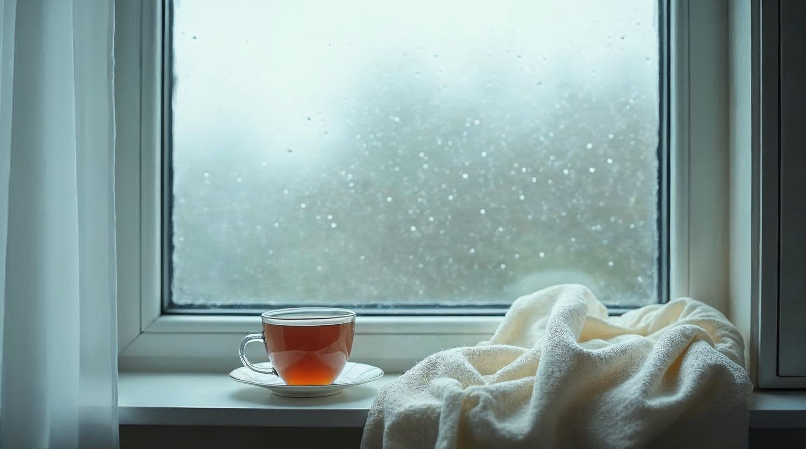
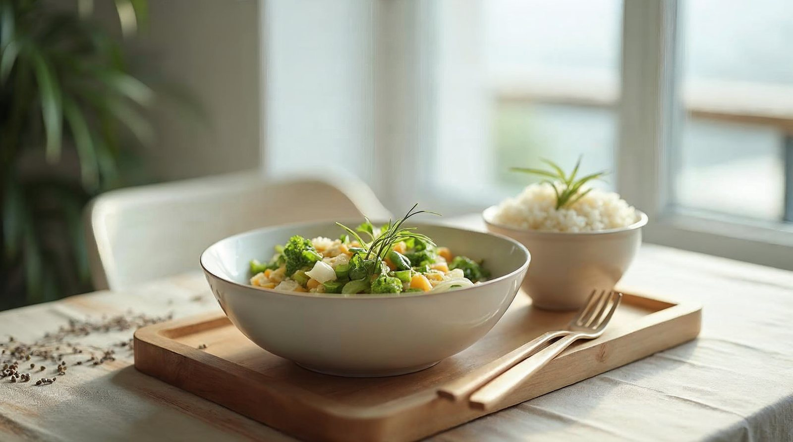
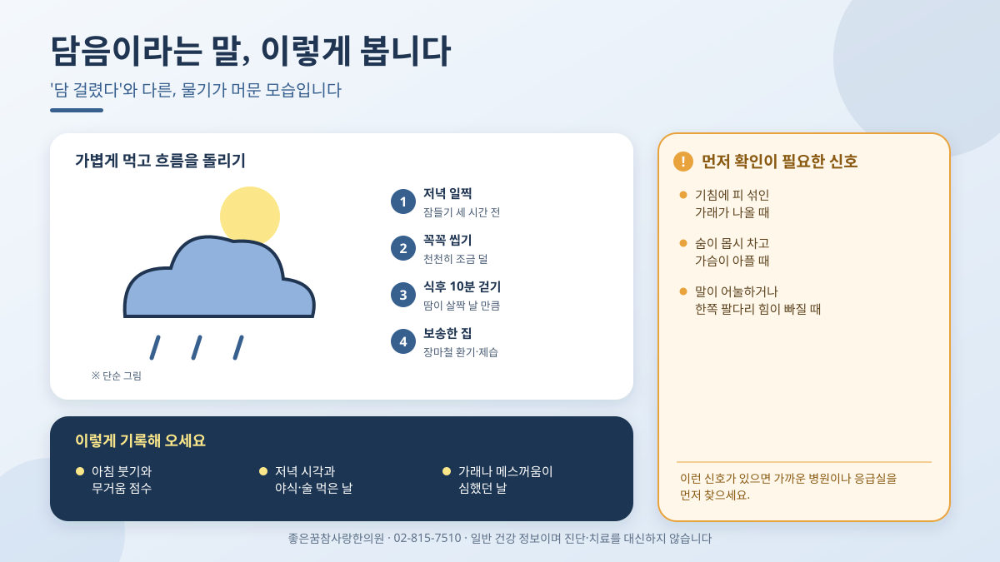

이종호 한의사 감수좋은꿈참사랑한의원 대표원장 (한의사 면허번호 19769)발행 2026-11-26 · 수정 2026-11-26
이 글의 차례
아침에 일어나면 몸이 물먹은 솜처럼 무겁고, 눈두덩이 붓고, 머리는 안개가 낀 듯 멍하다는 분이 계십니다. 목에는 뭔가 걸린 듯 가래가 끼고, 밥을 먹고 나면 속이 더부룩해 한참을 앉아 있어야 한다고 하십니다. 이런 말씀을 진료실에서 자주 듣습니다.
진찰을 마치고 "몸의 물기가 잘 돌지 못하고 머물러 있는 모습이에요. 한의학에서는 담음이라고 부릅니다"라고 말씀드리면 대부분 이렇게 되물으십니다. "담이요? 어깨에 담 걸린 그 담인가요?" 그 질문이 나올 만합니다. 같은 글자를 쓰니까요.
먼저 분명히 말씀드리겠습니다. 담음은 병명이 아닙니다. 검사로 확인하는 진단명도 아닙니다. 한의학에서 오랫동안 몸의 상태를 묘사할 때 써 온 전통적인 표현이고, 진찰에서 본 여러 모습을 묶어 설명하는 말입니다.
이 글에서는 담음이라는 말이 어떤 몸의 모습을 가리키는지, 흔히 쓰는 '담 걸렸다'와는 어떻게 다른지, 진료실에서 무엇을 보고 이 설명을 쓰는지, 그리고 생활에서 몸의 물기가 잘 돌게 하려면 무엇을 챙기면 좋은지를 차례로 말씀드리겠습니다.
담음은 어떤 몸 상태를 말하나요?
한의학에서는 몸속의 물기가 맑게 돌면서 구석구석을 적시고, 쓰고 난 물은 소변과 땀으로 나간다고 설명해 왔습니다. 이 흐름이 막히거나 느려지면 물기가 한곳에 머물며 탁하고 끈적해진다고 봅니다. 이렇게 머문 물기를 담음이라고 부릅니다.
흔히 끈적하고 진한 것을 담, 묽고 맑은 것을 음이라고 나누어 설명하기도 합니다. 고인 물이 오래되면 탁해지듯, 몸에서 잘 돌지 못한 물기가 머물면서 몸을 무겁게 하고 소화를 더디게 하며 머리를 맑지 않게 한다고 설명합니다.
담음은 눈에 보이는 특정한 물질을 가리키기보다, 물기가 잘 돌지 못할 때 나타나는 여러 모습을 묶어 부르는 말에 가깝습니다. 가래처럼 실제로 보이는 것도 있지만, 몸의 무거움이나 멍함처럼 느낌으로만 드러나는 것도 함께 담음이라는 말로 설명해 왔습니다.
이 말도 사람에게 붙이는 딱지가 아닙니다. 야식과 술자리가 잦았던 시기, 장마철처럼 습한 계절, 움직임이 크게 줄어든 시기에 이런 모습이 짙어졌다가 생활이 바뀌면 옅어지기도 합니다. 지금 이 시기의 몸을 묘사하는 말로 이해해 주시면 됩니다.
'담 걸렸다'의 담과는 어떻게 다른가요?
일상에서 "어깨에 담 걸렸다"고 하면 대개 근육이 갑자기 결리고 뭉쳐 고개를 돌리기 힘든 상태를 말합니다. 이것은 근육과 근막이 굳고 뭉친 문제에 가깝고, 진료실에서도 근육의 결림으로 살핍니다.
한의학에서 말하는 담음은 이보다 훨씬 넓은 말입니다. 몸 전체의 물기 흐름이 느려져 무거움, 붓기, 가래, 메스꺼움, 어지럼, 머리 멍함 같은 모습이 나타나는 상태를 아우릅니다. 옛 문헌에서는 담음이 머무는 자리에 따라 결림이 생긴다고 설명하기도 해서 일상어에 '담'이 남았다고 보기도 합니다.
그래서 어깨가 결려 오신 분께 담음이라는 말을 쓰는 경우는 많지 않습니다. 결림과 함께 몸이 무겁고 붓고 속이 더부룩한 모습이 겹칠 때 담음이라는 설명을 함께 꺼냅니다.
왜 담음 같은 상태가 생긴다고 보나요
한의학에서는 소화를 맡은 쪽이 물기를 잘 나르지 못하거나, 움직임이 적어 흐름이 느려지거나, 기름지고 단 음식이 많아 처리할 것이 넘치면 물기가 머문다고 설명해 왔습니다. 들어오는 것이 많고 돌리는 힘이 약하면 고인다고 봅니다.
생활에서 흔히 보는 이유는 이렇습니다.
- 기름지고 달고 밀가루가 많은 음식, 잦은 야식
- 과식이나 빨리 먹는 습관
- 잦은 술자리와 단 음료
- 하루 대부분을 앉아서 보내는 생활
- 장마철이나 습한 곳에서 오래 지내는 환경
- 소화가 약해 먹으면 늘 더부룩한 경우
밤늦은 식사가 특히 자주 이야기됩니다. 잠자는 동안에는 소화와 물의 흐름이 느려지는데, 이때 위에 음식이 가득 차 있으면 다음 날 아침 몸이 무겁고 붓기 쉽습니다. 야식 다음 날 얼굴이 부어 있는 경험을 떠올리시면 가깝습니다.
계절도 영향을 줍니다. 장마철이나 습도가 높은 여름에는 몸이 무겁고 처진다는 분이 많아집니다. 땀이 잘 마르지 않고 움직이기 싫어지면서 물기의 흐름이 더 느려진다고 설명합니다.
현대 의학으로 보면 이런 모습 뒤에 위장 기능 저하, 체중 증가와 대사 문제, 수면 무호흡, 만성 비염과 후비루, 갑상선 기능 저하, 심장이나 신장 문제로 인한 부종 같은 이유가 숨어 있을 수 있습니다. 그래서 담음이라는 설명을 드리더라도 필요하면 병원 검사를 함께 권해 드립니다.
진맥·설진·문진에서는 무엇을 함께 보나요
진맥에서는 맥의 결을 봅니다. 담음에 가까운 분은 손끝에서 구슬이 굴러가듯 매끄럽게 미끄러지는 맥을 보이는 경우가 많습니다. 다만 식사 직후나 임신 중에도 맥이 이렇게 잡힐 수 있어서 맥 하나로 정하지 않습니다.
설진에서는 설태를 가장 먼저 봅니다. 혀 위에 하얗거나 누런 설태가 두껍게 덮이고 끈적하게 보이는 모습, 혀가 부어 가장자리에 이 자국이 남는 모습을 담음과 연결해 설명해 왔습니다. 커피나 우유를 마신 직후에는 설태 색이 달라 보일 수 있어서 이 점도 함께 여쭙습니다.
문진에서는 아침에 몸이 무겁고 붓는지, 목에 가래가 끼는지, 메스꺼움이나 속 울렁거림이 있는지, 머리가 무겁고 멍한지, 대변이 끈적하거나 시원하지 않은지, 비 오는 날 몸이 더 무거운지를 여쭙습니다. 이런 대답이 맥과 혀와 같은 쪽을 가리킬 때 담음이라는 설명을 조심스럽게 붙입니다.
세 가지는 서로를 확인하는 장치입니다. 설태가 두꺼워 보여도 생활에서 무거움이나 가래가 전혀 없다면 담음이라고 말씀드리지 않습니다. 반대로 혀가 깨끗해 보여도 몸의 무거움과 붓기가 이어지면 그 이유를 다른 쪽에서 더 찾아봅니다.

생활에서 흔히 느끼는 모습
담음이라는 설명을 들으시는 분들이 흔히 말씀하시는 모습은 이렇습니다. 몇 가지가 겹쳐 오래 이어지는지가 중요합니다.
- 아침에 몸이 무겁고 얼굴과 손이 붓는다
- 머리가 무겁고 안개가 낀 듯 멍하다
- 목에 가래가 끼어 자주 헛기침을 한다
- 식사 뒤 속이 더부룩하고 울렁거린다
- 대변이 끈적하고 시원하지 않다
- 비가 오거나 습한 날 몸이 더 처진다
이런 모습은 하루 과식한 다음 날의 무거움과는 다릅니다. 식사를 조심한 날에도 몸이 무겁고, 몇 주씩 아침 붓기와 머리 멍함이 이어진다면 기록해 두시면 좋습니다.
비슷해 보이지만 다르게 살피는 것
가래가 몇 달째 이어진다면 호흡기 쪽을 먼저 살펴야 합니다. 담배를 피우시는 분, 숨이 차거나 기침이 오래가는 분은 흉부 검사를 먼저 받아 보시길 권합니다. 코 뒤로 콧물이 넘어가는 후비루 때문에 가래처럼 느끼시는 경우도 많습니다.
붓기도 나눠 봅니다. 아침 얼굴 붓기가 저녁이면 빠지는 것과, 다리가 붓고 눌렀을 때 자국이 오래 남으며 숨이 차는 것은 다릅니다. 뒤의 경우는 심장이나 신장 쪽 검사가 먼저입니다.
어지럼도 마찬가지입니다. 고개를 돌릴 때 빙글빙글 도는 어지럼은 귀의 평형 기관 쪽 문제일 수 있어서 따로 살핍니다. 머리가 무겁고 멍하면서 몸이 처지는 모습이 함께 있을 때 담음 쪽 설명을 씁니다.
담적이라는 말을 들어 보셨다는 분도 많습니다. 소화가 오래 더딘 모습을 설명하는 말로 쓰이기도 하지만, 검사로 확인되는 병명은 아닙니다. 속이 오래 불편하다면 위내시경 같은 검사를 먼저 받아 보시고, 그 위에서 생활과 소화의 흐름을 함께 살피는 것이 좋습니다.
스스로 점검해 볼 것
집에서 내 몸을 돌아보는 질문입니다. 진료실에서 이야기할 거리를 모은다고 생각해 주세요.
- 저녁 식사는 잠들기 몇 시간 전에 마치나요?
- 일주일에 야식이나 술자리가 몇 번 있나요?
- 하루 중 앉아 있는 시간과 걷는 시간은 어느 정도인가요?
- 아침에 일어났을 때 얼굴이나 손이 붓는 날이 일주일에 며칠인가요?
- 단 음료나 빵, 과자를 하루에 얼마나 드시나요?
질문에 답하다 보면 물기가 고이는 자리가 보이기 시작합니다. 늦은 식사가 먼저인지, 움직임 부족이 먼저인지, 단 음식이 먼저인지에 따라 생활에서 먼저 손볼 곳이 달라집니다.
먼저 이렇게 여쭙니다
- 몸이 무겁고 붓는 느낌은 언제부터, 하루 중 언제 심한가요?
- 가래, 메스꺼움, 머리 멍함 가운데 무엇이 가장 불편한가요?
- 식사 시간과 양, 야식과 술은 어떤가요?
- 대변의 모양과 횟수는 어떤가요?
- 코골이가 있거나 자고 나도 개운하지 않은가요?
- 드시는 약이나 영양제가 있나요? 임신 중이거나 가능성이 있나요?

일상에서 먼저 해 볼 수 있는 것
몸의 물기가 잘 돌게 하는 일은 들어오는 것을 가볍게 하고 돌리는 힘을 키우는 데서 시작합니다. 아래 가운데 지금 가장 쉬운 하나부터 골라 보세요.
- 저녁은 잠들기 세 시간 전에 마치기
- 단 음료 대신 물이나 따뜻한 차 마시기
- 한 숟가락에 20번 이상 꼭꼭 씹어 천천히 먹기
- 식사 뒤 10~15분 가볍게 걷기
- 한 시간 앉아 있으면 일어나 몸을 펴고 걷기
- 장마철에는 제습기나 환기로 집 안을 보송하게 하기
움직임은 물기의 흐름을 돕는 가장 확실한 방법입니다. 땀이 살짝 날 정도로 걷는 것만으로도 몸이 가벼워진다고 말씀하시는 분이 많습니다. 처음에는 식사 뒤 10분 걷기부터 시작해 보세요.
식사는 양을 조금 줄이고 속도를 늦추는 것이 먼저입니다. 기름진 음식과 밀가루, 단 음식은 끊기보다 횟수를 줄이고, 채소와 담백한 단백질 반찬을 먼저 먹는 순서로 바꿔 보세요.
물은 조금씩 자주 드시는 편이 좋습니다. 붓는다고 물을 피하시는 분도 계신데, 오히려 물을 너무 적게 마시면 몸이 물을 붙잡아 두려 한다고 설명하기도 합니다. 짠 음식을 줄이는 쪽이 붓기에는 더 도움이 됩니다.
한의원에서 함께 살필 수 있는 경우
- 검사는 괜찮다는데 몸이 무겁고 아침마다 붓는 경우
- 머리가 무겁고 멍하며 속이 자주 더부룩한 경우
- 목에 가래가 끼는 느낌이 이어지는데 호흡기 검사는 괜찮은 경우
- 체중이 늘면서 몸이 처지고 움직이기 싫어진 경우
좋은꿈참사랑한의원에서는 진맥과 설진, 문진을 마친 뒤 지금의 모습을 쉬운 말로 먼저 설명드립니다. 담음이라는 말을 쓰더라도 그것이 식사, 움직임, 잠 가운데 무엇과 이어지는지를 함께 말씀드립니다.
진찰한 내용에 따라 침, 생활 조정, 한약 상담 가운데 지금 상태에 맞는 것을 정합니다. 한약을 상의할 때는 드시는 약과 영양제를 모두 확인하고 신중하게 정합니다. 임신 중이거나 가능성이 있다면 먼저 알려 주시고 산부인과 선생님과도 상의해 주세요.
혈압약이나 당뇨약처럼 병원에서 처방받은 약은 상의 없이 멈추지 않고 그대로 이어 가시면 됩니다. 한의원 진료는 그 곁에서 몸의 무거움과 생활의 흐름을 함께 살핀다고 생각해 주세요.
이렇게 기록해 오시면 상담이 쉬워집니다
- 아침 붓기와 몸의 무거움을 10점 만점으로 적은 점수
- 저녁 식사 시각과 야식, 술을 먹은 날
- 식사 뒤 걸은 날과 걸은 시간
- 가래나 메스꺼움이 심했던 날
- 비가 오거나 습했던 날
2주 정도 적어 보시면 몸이 무거운 날과 생활 사이의 연결이 보이기 시작합니다. 빈칸이 있어도 괜찮으니 편하게 적어 주세요.
담음이라는 말을 들으셨다면
담음은 몸이 '흐름이 막혔으니 조금 가볍게 해 달라'고 보내는 신호를 한의학의 말로 옮긴 것이라고 생각해 주세요. 무서운 병명이 아니라, 먹는 것과 움직임의 균형을 돌아보자는 제안입니다.
이번 주에는 저녁을 일찍 마치기, 식사 뒤 10분 걷기 가운데 하나만 골라 보세요. 다음에 오시면 혀와 맥을 다시 보면서 그 사이 몸이 어떻게 움직였는지 함께 살펴보겠습니다.
가족과 함께 오셔서 같은 설명을 들으시면 집에서 저녁 시간과 반찬을 바꾸기가 한결 수월합니다. 야식은 혼자보다 가족이 함께 줄일 때 오래갑니다.
이런 증상은 먼저 확인이 필요합니다
- 기침에 피 섞인 가래가 나오거나 숨이 몹시 차고 가슴이 아픈 경우
- 갑자기 말이 어눌해지거나 한쪽 팔다리에 힘이 빠지고 심한 어지럼으로 걷기 힘든 경우
이런 신호가 있으면 한의원보다 가까운 병원이나 응급실을 먼저 찾으세요.
함께 읽으면 좋은 글
- 감기도 아닌데 가래가 몇 달째 끓는 만성 가래는 무엇을 살펴봐야 하나요?
- 자주 체한다는 느낌, 식체나 담적이라는 말은 무엇을 뜻하고 어떻게 살피나요?
- 어깨와 등이 늘 뭉쳐 있고 담이 자주 걸리는 근막통증증후군은 어떻게 살피나요?
- 머리에 안개가 낀 듯 멍하고 맑지 않은 브레인포그는 무엇을 살피나요?
- 혀에 하얗거나 노란 막이 끼는 설태는 무엇을 뜻하나요?

여쭙는 것
- 몸이 무겁고 붓는 느낌은 언제부터, 하루 중 언제 심한가요?
- 가래, 메스꺼움, 머리 멍함 가운데 무엇이 가장 불편한가요?
- 식사 시간과 양, 야식과 술은 어떤가요?
생활에서 해 볼 것
- 저녁은 잠들기 세 시간 전에 마치기
- 단 음료 대신 물이나 따뜻한 차 마시기
- 한 숟가락에 20번 이상 꼭꼭 씹어 천천히 먹기
한의원에서 함께 살필 것
- 검사는 괜찮다는데 몸이 무겁고 아침마다 붓는 경우
- 머리가 무겁고 멍하며 속이 자주 더부룩한 경우
- 목에 가래가 끼는 느낌이 이어지는데 호흡기 검사는 괜찮은 경우
먼저 확인이 필요한 신호
- 기침에 피 섞인 가래가 나오거나 숨이 몹시 차고 가슴이 아픈 경우
- 갑자기 말이 어눌해지거나 한쪽 팔다리에 힘이 빠지고 심한 어지럼으로 걷기 힘든 경우
한눈에 보는 표
| 구분 | 핵심 |
|---|---|
| 여쭙는 것 | 몸이 무겁고 붓는 느낌은 언제부터, 하루 중 언제 심한가요? 가래, 메스꺼움, 머리 멍함 가운데 무엇이 가장 불편한가요? |
| 생활에서 해 볼 것 | 저녁은 잠들기 세 시간 전에 마치기 단 음료 대신 물이나 따뜻한 차 마시기 |
| 한의원에서 함께 살필 것 | 검사는 괜찮다는데 몸이 무겁고 아침마다 붓는 경우 머리가 무겁고 멍하며 속이 자주 더부룩한 경우 |
| 먼저 확인이 필요한 신호 | 기침에 피 섞인 가래가 나오거나 숨이 몹시 차고 가슴이 아픈 경우 갑자기 말이 어눌해지거나 한쪽 팔다리에 힘이 빠지고 심한 어지럼으로 걷기 힘든 경우 |
자주 묻는 질문
담음은 어깨에 담 걸린 것과 같은 말인가요?
같은 말은 아닙니다. 어깨에 담 걸렸다는 것은 대개 근육이 갑자기 결리고 뭉친 상태를 말하고, 담음은 몸의 물기가 잘 돌지 못해 무거움, 붓기, 가래, 머리 멍함이 나타나는 모습을 한의학에서 전통적으로 묶어 부르는 말입니다.
담음이 있으면 몸에 노폐물이 쌓였다는 뜻인가요?
흔히 그렇게 풀어 말하기도 하지만, 검사로 확인되는 특정 물질을 가리키는 말은 아닙니다. 물기의 흐름이 느려졌을 때 나타나는 여러 모습을 묶어 설명하는 말로 이해해 주시면 됩니다.
붓기가 있으면 물을 적게 마시는 게 좋은가요?
물을 너무 줄이기보다 조금씩 자주 마시고 짠 음식을 줄이는 쪽을 권해 드립니다. 다리가 심하게 붓고 숨이 차다면 심장이나 신장 검사를 병원에서 먼저 받아 보세요.
담음은 체질처럼 계속 가나요?
정해진 체질이 아니라 시기에 따라 달라지는 상태로 봅니다. 식사와 움직임, 잠이 바뀌면 그 모습이 옅어지는 경우가 많아서 시간을 두고 다시 살핍니다.
좋은꿈참사랑한의원은 재진 때 지난번 이야기부터 이어서 여쭙니다. 진료시간과 예약은 오시는 길에서 확인하세요.
어디서 상담받을 수 있나요?
좋은꿈참사랑한의원은 서울 동작구 만양로2길 2 신성빌딩 3층·5층(서울 동작구 상도동, 7호선 상도역 3번 출구 근처)에 있습니다. 한의사 3명(이종호 대표원장, 조영기 수석진료원장, 정원영 진료원장)이 진료합니다. 진료시간은 평일 09:30~20:00(점심 13:00~14:00), 토·일·공휴일 09:30~15:00이며, 방문 전 전화로 확인을 권합니다. 예약은 네이버 예약, 카카오톡 상담, 전화 02-815-7510로 받습니다.
이 글은 일반적인 건강 정보이며 개인의 진단이나 치료를 대신하지 않습니다. 증상이 있거나 복용 중인 약이 있다면 진료를 통해 확인하세요. 치료 효과는 개인마다 다를 수 있습니다.
작성 기준: 일반적으로 알려져 있는 건강 정보를 참고해 정리했습니다(대표원장 감수). 증상 기록은 1~2주 동안 하루 1회, 비슷한 시간에 적어 오시면 지난 상태와 비교하기 쉽습니다.